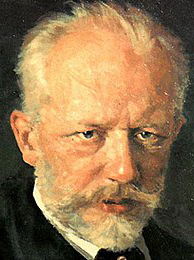

Pyotr Ilyich Tchaikovsky often anglicized as Peter Ilich Tchaikovsky, was a Russian composer of the romantic period, some of whose works are among the most popular music in the classical repertoire. He was the first Russian composer whose music made a lasting impression internationally, bolstered by his appearances as a guest conductor in Europe and the United States. Tchaikovsky was honored in 1884 by Emperor Alexander III, and awarded a lifetime pension.